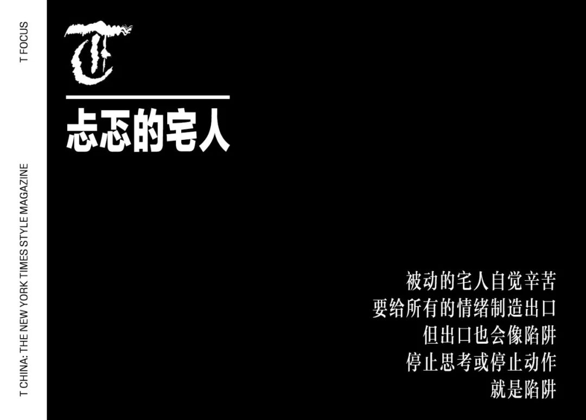

黄冈：疫区副中心的春节
原文链接 备份链接 “出不去，进不来。走不了，不敢走。” 江与湖 No.154 何处惹尘埃 黄冈：疫区副中心的春节 作者：花鳞 韩国电影《釜山行》，讲了一个逃离丧尸围城的故事，父亲用自己的生命换回女儿一条命。但据说，这部电影其实有两个 …

这是系列报道的第十一篇，我们把视角转向暂且「无恙」的宅人们。今天是你自行隔离的第几天？期间的困惑、愤懑、无奈和乏味，是否找到排解出口？作为没有直接进入现场的旁观者，你又在这场灾难中扮演了什么角色？作家和译者于是自诩「资深宅人」，然而这场始料未及的「宅」却让她忐忑不已：权力和求生欲的双重钳制，失真中的共情，以及不对等信息下滋生的脆弱期待。****她的个人志也是众生相，而我们，即便明知在柏拉图的「洞穴」中实属身不由己，但也切莫独善其身。

我个人史上曾经的最高纪录是 21 天没有出门，当时住的是高层，垃圾不分类，有专用通道。如果把不出小区作为不出门的标准，那么，这次（新形冠状病毒肺炎疫情期间）我已破了纪录，并且有几亿人作陪。复工后，又有几亿人和我一样在家办公，在家跳操。这是史无前例的宅人集体生活。
可想而知，宅家对我而言是常态，十多年来，每个长假都是我的最佳工作时间，这次我也给自己安排了每天的工作额度，我感受到了工作带来的催眠感，只有在沉浸到具体工作的某个时间段里，外部世界及其纷扰才似乎能被屏蔽掉。我有自己的时间表，有固定的流程，有 to-do-list，用扫除作为解闷和运动，宅得相对自律。
但这次宅得心烦意乱。前期遥望封城，囤货隔离；中期每天一睁眼就看数据，凌晨抢菜，夜半被死讯气到胸闷，种种不可思议搅乱思路；现已进入后期，数据和网传引发的情绪波动渐渐变小了，怕死的冲动平息，一如往常的是害怕日后的遗忘，害怕活得不像自己希望的那样 —— 比如，希望自己有能力改变什么。
在某个时间点，我突然重新想起自己曾有过的执念：对于世事，我们无法知道真相。如果真相是巨量的具象组成，但谁都没有上帝视角。然而，真相只是「一」，如同人类是一个共同体，而我们依然是无明颠倒的碎屑，拼不出那个一。
一开始不想重看 2011 年的《传染病》，后来双黄连火了，忍不住去重温了裘德洛的连翘美梦，2020 年再看实在寒心。人的眼前永远有官僚的谎言和丑态，永远有平庸之恶，永远有自私和贪欲，但若没有切肤之痛，人就不会记住教训，但只要幸存了能活下去，却又势必沉沦在无明颠倒之中。
且不说幸存者，死者也会痛，死者不能决定自己的死亡时间 —— 你可以正解或误解。我顺便说说《德古拉》，德古拉告诫过这一届新娘：死后不要火葬，会疼。他和新娘在墓地里约会，听得到地下窸窸窣窣的呼喊。
德古拉也是旷世宅人。早年我就安妮 · 赖斯的系列小说写过一篇关于小说影视中吸血鬼的进化史，现在得加上一笔：2019 年 BBC 版的德古拉很快学会了利用互联网，连新娘都是用 Tinder 找的，可方便呢。互联网时代的德古拉尝到了虚无主义者的美味，也尝到了当今绝症的滋味，有癌的血会让他吐 —— 类似吸血鬼的还有吸食人类痛苦和恐惧的妖怪，J.K. 罗琳写过，斯蒂芬 · 金也写过。但后者的幽默在于：想象了用传染病打败妖怪的情节 —— 吸了麻疹患者后，妖怪们纷纷倒下，几近团灭。换言之，只有当传染对象是妖怪时，这才有幽默可言。传染对象是人类时，随之泛滥的是荒谬和绝望。
对我们这些史无前例的网民宅人来说，没有互联网平台就根本宅不下去。衣食住行方方面面都要借助数码平台，菜场都在网上，房产中介叫你网上看房，楼上的小朋友跟着屏幕里的体育老师跳绳，还有数不清的网络求助，还有来自南极、尼日利亚、巴西、印度、英国、日本……的数不清的坏消息。
众生相也全在「网眼」里 ——
A 提前从澳门回上海，因为担心停航，更担心赌场成为重灾区，兴奋的赌客的每只手每张嘴每只眼里都带着高光般的病毒；
B 的老婆突发急性肠胃病，半夜急诊，自己却因为体温超过 37 差点儿被隔离；
C 成为第二批支援武汉的医护人员；
D 组织了价值数百万的卫生物资，在红十字会碰壁后，直接通过地方政府，包车运送到孝感的医院；
E 坐困江城，用尽资源为亲朋好友寻求解救机会；
F 抑郁症复发，不想出门拿药，但脑海中的幻听愈来愈响；
G 被调用基层返沪人员排查工作，累得半死；
H 开始毕业后第一次大规模阅读，恶补索尔尼仁琴托尔斯泰加缪阿伦特，以求伦理道德哲学层面的速成更新；
I 焦虑自己的微型企业可能撑不过这一季度；
J 从节前开始一天三顿给儿子做饭也打破纪录，黔驴技穷；
K 独自在家闷到不行，邀昔日 K 友云对唱，各自对着手机嘶吼；
L 幸亏年前促销时购入划船机一台，每日闹钟定时，陆地行舟 4 公里；
M 在银行发放贷款，最近在家加班，日夜无休随叫随到 ……

与此同时，好友圈从长假旅行摄影大赛变成厨艺摄影大赛，一切生活本相打回原形，职业女性重拾家务，男主外的意思回归到买菜拿快递倒垃圾。多少人突然明白了：私人生活的范畴实际上庞杂无际，美好生活依附于那么多平凡的劳动者，因而是脆弱的，也因而是伟大的。21 世纪的生活新秩序，在某些元素的暂时缺失状态下，得到了最鲜明的彰显。
每一个群都在复述已知的内容，每一条朋友圈都在输送已知的情绪，几乎都在奥斯卡颁奖前夜忘了还有这茬儿，忘了东京还要举办奥运会，对特朗普、普京或英国皇室的关心额度也都给了病毒。
所以，宅的状态根本不是独处，而是自己和无数叙事主体的虚拟共情。「网眼」构成的共同体有一样的漏洞，也有一样的出口。依托于网的宅，表面似可无所不知，亦可知无不言，实则恰恰相反。实在界的硬核只有被虚拟化后才能持续存在。「网眼」里的一切都挺像柏拉图洞穴里的影像 —— 宅人要有这样的自觉。
主动宅的人通常珍爱孤独，独处让他们自在。但这次很容易感受到一点：孤独并不天然存在，谁也无法脱离外部存在，他们的孤独只是美学意义上的精神意境。
现在能够宅的人，其实是这次席卷亿万人的大事件中的幸运者，没有任何资格抱怨无聊或沉闷。
现在能够宅的人，都是暂时没有直接进入现场的旁观者，对现场发生的一切只能通过被剪辑过的视频音频文字来解读，被投喂人工饲料或天然原材料，在权力和求生欲的双重钳制下顺服地宅家，在失真中共情，在片面的想象中期待达成共同的期望。
虚假的幸福感很容易获得，但伪善更值得警惕。

义愤填膺之后，会不会发现气愤没有明确的目标？陪伴绝望的哭泣之后，会不会问自己你做了什么？在独自一人的信息处理过程中，你有过怎样的质疑和研判？在每天从早到晚不间断的重磅消息密集涌来的特殊时期里，你如何扩增信息处理的能力，抑或只是简单粗暴地覆盖？会因为没做什么而愧疚吗？会因为无能为力而挫败吗？相比于无法知道真相而有的无力感，这种无能感会不会让你更无力？
病毒发生在每一个病人体内、悬置并移动在时空中的过程就像死亡本身一样无法复述。真相的这一角也将永远缺失，也是孤独的注脚。
被动的宅人自觉辛苦，要给所有的情绪制造出口，但出口也会像陷阱：停止思考或停止动作，就是陷阱。被动吸收的情绪迅速饱和，手指做的最多的动作只是转发；转了谣言再转辟谣，或再转造谣式辟谣，转了生机再转死讯，转了谎言再转为了覆盖谎言的谎言，转了愤怒再转悲愤，但也转了不少笑话 —— 仅仅都是转发。
被投喂的感觉让我想起不久前曾凝视的壁炉之火，真正的柴薪烧起来比你想象得快，火舌舔过的动作既无情又温柔。柴薪烧光了之后，我们就用酒精块投喂它，让它迅速燃烧。但你不能说那火是纯然虚假的。
当然，无论怎样的生活状态都不影响你仰望高贵。在仰望的姿态中意识到自身的卑微，或洁净或污浊的卑微。但我最近也见到沉沦于仰望的人，造神般打造高贵的承载者，架空了真相的卑微，乃至卑鄙。
简而言之，资深宅人的我不曾这样忐忑地宅过。
策划：《T》中文版编辑部
撰文：于是
开篇撰文：张权 设计：子慜 编排：Lu Wang


原文链接 备份链接 “出不去，进不来。走不了，不敢走。” 江与湖 No.154 何处惹尘埃 黄冈：疫区副中心的春节 作者：花鳞 韩国电影《釜山行》，讲了一个逃离丧尸围城的故事，父亲用自己的生命换回女儿一条命。但据说，这部电影其实有两个 …